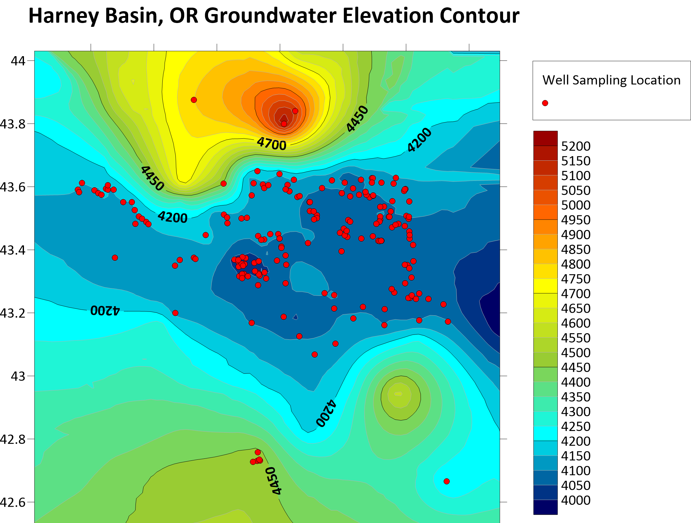
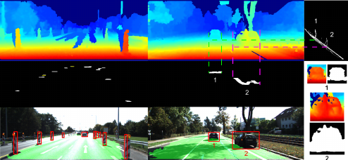
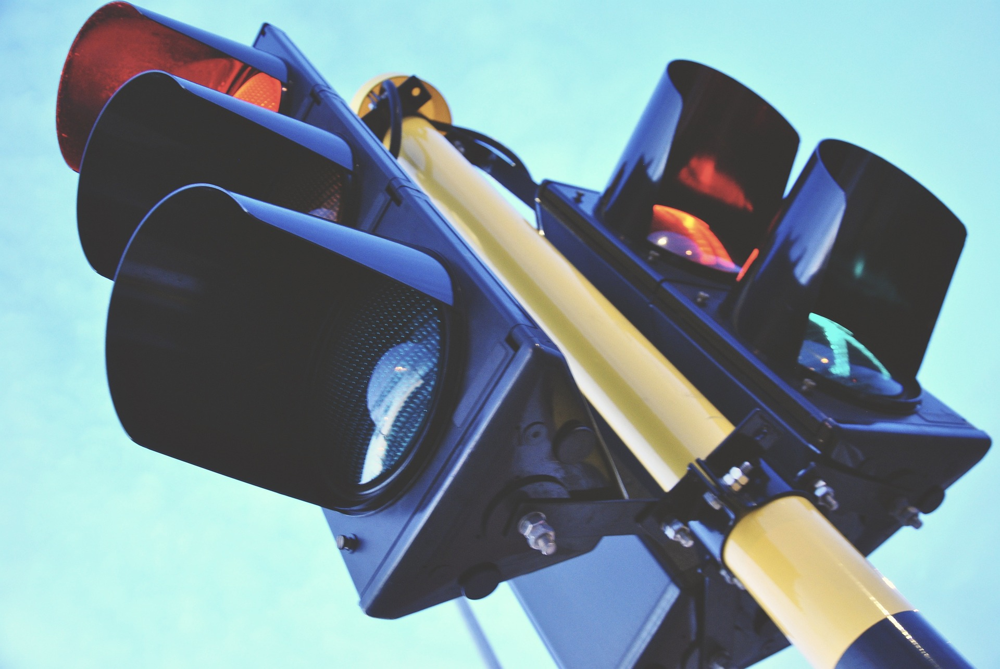

Overview
Environmental Mapping & Obstruction Detection is a critical aspect of autonomous vehicle navigation. By utilizing sensor and camera data, autonomous systems can generate accurate maps of the surrounding environment in real-time. These maps help minimize traffic congestion, improve driving efficiency, and ensure safety by detecting potential obstacles before they become hazards.
Sensors such as LiDAR, radar, and cameras work together to provide a comprehensive view of the surroundings, while computer vision and machine learning algorithms process the data to detect and categorize objects and road conditions. These technologies also assist in adjusting vehicle routes based on dynamic environmental factors such as traffic flow, roadwork, or weather conditions.

Key Technologies
The integration of various advanced technologies is essential to creating accurate environmental maps and detecting obstructions in real-time. The following technologies play a key role:
LiDAR Sensors: LiDAR provides precise 3D mapping by emitting laser beams and analyzing their reflection to capture the environment's structure. This data is crucial for identifying static obstacles like buildings, trees, and road barriers.
Radar Sensors: Radar is particularly useful in adverse weather conditions such as fog, rain, or snow. It helps detect obstacles and monitor moving objects, ensuring the vehicle can avoid collisions even when visibility is poor.
Cameras: Cameras provide visual data that can be processed using computer vision techniques to identify specific road features, lane markings, pedestrians, and other vehicles. These images can be combined with LiDAR data to improve map accuracy.
Computer Vision: Machine learning algorithms analyze camera images to detect road features, obstacles, and pedestrians. Computer vision is essential for classifying objects and understanding the dynamic environment of the vehicle.
Sensor Fusion: By combining data from various sensors, sensor fusion algorithms create a more reliable and accurate understanding of the environment, allowing the system to identify both stationary and moving obstacles in real time.
Together, these technologies form a robust system that allows autonomous vehicles to navigate complex environments while detecting and avoiding potential hazards.
Obstruction Detection
Obstruction detection is a key part of ensuring the safety of autonomous vehicles. This involves identifying and responding to potential hazards, such as pedestrians, other vehicles, animals, or debris, that may obstruct the vehicle's path. Obstruction detection relies on several sensors to detect objects and classify them in real-time.
Pedestrian Detection: Using cameras and LiDAR, autonomous vehicles can detect pedestrians and other vulnerable road users. Computer vision algorithms classify these objects and predict their movement, enabling the vehicle to take necessary actions like slowing down or stopping.
Vehicle Detection: Radar and LiDAR are commonly used to detect vehicles in the vicinity. These sensors help determine the speed, location, and direction of other vehicles, enabling collision avoidance techniques such as lane change assistance or automatic emergency braking.
Obstacle Classification: Objects such as debris, potholes, or fallen branches can be detected using a combination of cameras and LiDAR. Once detected, the vehicle can decide whether to avoid the obstacle by adjusting its route or speed.
Dynamic Path Adjustment: By analyzing data from sensors, the vehicle can dynamically adjust its route to avoid newly detected obstructions or traffic conditions. Real-time path planning helps the vehicle choose the most optimal and safe route.
Obstruction detection is an ongoing process that requires constant updates to the map and the vehicle’s understanding of its environment. These systems continuously evaluate the road conditions and respond in real-time to prevent collisions.

Traffic Congestion Management
Environmental mapping and obstruction detection play a significant role in managing traffic congestion in urban areas. By monitoring traffic flow and road conditions, autonomous systems can reroute vehicles in real-time to avoid traffic jams, road closures, and accidents, improving overall traffic efficiency.
Real-time Traffic Monitoring: Cameras, sensors, and GPS data from vehicles provide real-time information about traffic conditions. Autonomous vehicles can access this data and adjust their routes to avoid congestion or accidents.
Dynamic Route Optimization: By analyzing traffic patterns and using AI-driven algorithms, vehicles can choose the fastest and safest route, reducing travel time and minimizing congestion in busy areas.
Cooperative Traffic Management: Vehicle-to-vehicle (V2V) communication can also play a role in managing congestion. Vehicles can share information about traffic conditions, helping to synchronize traffic lights and optimize flow across the entire network.
Predictive Traffic Modeling: By integrating data from multiple sources, including weather forecasts, road conditions, and traffic history, predictive models can forecast potential traffic congestion, allowing vehicles to plan their routes accordingly.
These technologies collectively enhance traffic efficiency, reduce congestion, and improve overall mobility, making urban environments safer and more efficient.

Benefits of Environmental Mapping & Obstruction Detection
The integration of environmental mapping and obstruction detection offers numerous benefits for both autonomous vehicles and the broader transportation system:
Increased Safety: Real-time detection of obstacles and road hazards improves vehicle safety, reducing accidents and the risk of collisions.
Reduced Traffic Congestion: By monitoring and adjusting traffic flow, autonomous vehicles help alleviate congestion, resulting in smoother travel and shorter commute times.
Efficient Navigation: With accurate environmental maps and real-time data, vehicles can optimize routes to avoid traffic jams, accidents, or roadwork, saving time and energy.
Better Environmental Impact: Minimizing congestion and optimizing driving routes reduces fuel consumption, leading to lower emissions and a greener environment.